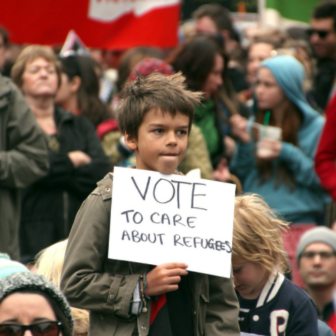
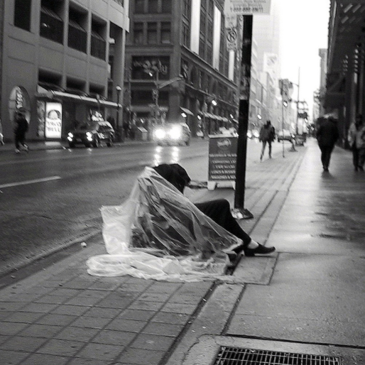
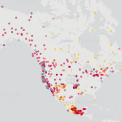

Xing C. Brew
Life enthusiast
Life enthusiast
Hello, I am Xing. I'm 27 years old and live in Toronto with my husband. I currently work as Executive Coordinator of YWCA Toronto and I love my job. I also co-founded and am chief operating officer of databrew. When I'm not at work, I enjoy practicing Brazilian Jiujiutsu, playing the Chinese harp, and going to pub trivia nights. I also like designing websites, making data visualizations and maps, and embarking on other creative projects. You can see some of my work in my portfolio. My current life goal is living in the present moment as much as possible.
In order to build my web design skills and portfolio, I'm offering to make you or your organization a website in exchange for lunch. Please get in touch if you're interested!

Visualizing data on refugees in Canada using R
Below are graphs that show different statistics about resettled refugee and refugee claimants using data from Government of Canada Open Data

This graph shows the cumulative number of Government Resettled refugees in Canada between 2011 and September 2016

This shows the level of education of the Government Resettled refugees in Canada. Note that this is for refugees of all ages (children included), hence why there are so many with low education.

This chart shows total number of refugee claimants in Canada each year from 2011-2015 by country. The top 10 countries are coloured, and the rest are grouped together in Other.

As can be seen by this graph of Syrian refugees who entered Canada between November 2015 and September 2016, there is a fairly equal number of male and females.


Interactive map of homeless shelters in Toronto
This map indicates the location of homeless shelters around Toronto. The circles are sized based on the number beds the shelter has and they are coloured based on the type of people the it serves (see legend at bottom right). Click on a cicle to get information about the shelter - address, phone number, and number of beds.
Data from Toronto Open Data Catalogue and Housing and Homeless Services.

Mapping endangered and extinct languages in North America
This map shows the many vulnerable, endangered, and extinct languages in Canada, USA, and Mexico.
Data from The Guardian's Data Blog.